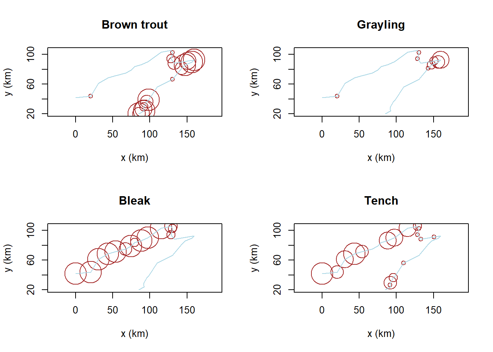

# Plot "response surfaces" in der CApar(mfrow =c(1, 2))plot(ca, display ="sites", type ="point")ordisurf(ca, ssit$pH.peat, add =TRUE, col ="red")
Family: gaussian
Link function: identity
Formula:
y ~ s(x1, x2, k = 10, bs = "tp", fx = FALSE)
Estimated degrees of freedom:
2.98 total = 3.98
REML score: 264.6064
text(-1.5, 2, "pH", col ="red")plot(ca, display ="sites", type ="points")ordisurf(ca, ssit$Waterlev.av, add =TRUE, col ="blue")
Family: gaussian
Link function: identity
Formula:
y ~ s(x1, x2, k = 10, bs = "tp", fx = FALSE)
Estimated degrees of freedom:
5.07 total = 6.07
REML score: 161.492
text(-1.5, 2, "Wasserstand", col ="blue")
# Daselbe mit einer DCApar(mfrow =c(1, 2))dca <-decorana(sveg)plot(dca, display ="sites", type ="points")ordisurf(dca, ssit$pH.peat, add =TRUE)
Family: gaussian
Link function: identity
Formula:
y ~ s(x1, x2, k = 10, bs = "tp", fx = FALSE)
Estimated degrees of freedom:
1.68 total = 2.68
REML score: 264.2347
text(-1, 1.5, "pH", col ="red")plot(dca, display ="sites", type ="points")ordisurf(dca, ssit$Waterlev.av, add =TRUE, col ="blue")
Family: gaussian
Link function: identity
Formula:
y ~ s(x1, x2, k = 10, bs = "tp", fx = FALSE)
Estimated degrees of freedom:
6.23 total = 7.23
REML score: 161.1293
text(-1, 1.5, "Wasserstand", col ="blue")
## Dasselbe mit NMDSmde <-vegdist(sveg, method ="euclidean")mmds <-metaMDS(mde)
Run 0 stress 0.1478603
Run 1 stress 0.148944
Run 2 stress 0.1675498
Run 3 stress 0.148944
Run 4 stress 0.1761234
Run 5 stress 0.1471495
... New best solution
... Procrustes: rmse 0.01081262 max resid 0.06880574
Run 6 stress 0.1611984
Run 7 stress 0.1471305
... New best solution
... Procrustes: rmse 0.003317518 max resid 0.02127688
Run 8 stress 0.1681986
Run 9 stress 0.1884095
Run 10 stress 0.1462959
... New best solution
... Procrustes: rmse 0.03006121 max resid 0.1479251
Run 11 stress 0.1886515
Run 12 stress 0.146296
... Procrustes: rmse 3.395676e-05 max resid 0.0002152331
... Similar to previous best
Run 13 stress 0.194364
Run 14 stress 0.1967157
Run 15 stress 0.146296
... Procrustes: rmse 3.101589e-05 max resid 0.0001675486
... Similar to previous best
Run 16 stress 0.16638
Run 17 stress 0.14778
Run 18 stress 0.1965682
Run 19 stress 0.1992432
Run 20 stress 0.1645185
*** Best solution repeated 2 times
library("MASS")imds <-isoMDS(mde)
initial value 21.981028
iter 5 value 15.595142
iter 10 value 15.269201
final value 15.229997
converged
Family: gaussian
Link function: identity
Formula:
y ~ s(x1, x2, k = 10, bs = "tp", fx = FALSE)
Estimated degrees of freedom:
3.04 total = 4.04
REML score: 264.6701
text(-4, 4, "pH", col ="red")plot(mmds$points)ordisurf(mmds, ssit$Waterlev.av, add =TRUE, col ="blue")
Family: gaussian
Link function: identity
Formula:
y ~ s(x1, x2, k = 10, bs = "tp", fx = FALSE)
Estimated degrees of freedom:
6.39 total = 7.39
REML score: 168.043
text(-4, 4, "Wasserstand", col ="blue")plot(imds$points)ordisurf(imds, ssit$pH.peat, add =TRUE)
Family: gaussian
Link function: identity
Formula:
y ~ s(x1, x2, k = 10, bs = "tp", fx = FALSE)
Estimated degrees of freedom:
3.38 total = 4.38
REML score: 264.0754
text(-4, 4, "pH", col ="red")plot(imds$points)ordisurf(imds, ssit$Waterlev.av, add = T, col ="blue")
Family: gaussian
Link function: identity
Formula:
y ~ s(x1, x2, k = 10, bs = "tp", fx = FALSE)
Estimated degrees of freedom:
6.01 total = 7.01
REML score: 167.6801
text(-4, 4, "Wasserstand", col ="blue")
Constrained ordination
# Umweltvariablen wäheln, durch die die Ordination constrained werden sollnames(ssit)
# Datensatz Doubs in den workspace ladenload("datasets/stat5-8/Doubs.RData")
# Daten anschauensummary(spe)
Cogo Satr Phph Babl Thth
Min. :0.00 Min. :0.00 Min. :0.000 Min. :0.000 Min. :0.00
1st Qu.:0.00 1st Qu.:0.00 1st Qu.:0.000 1st Qu.:1.000 1st Qu.:0.00
Median :0.00 Median :1.00 Median :3.000 Median :2.000 Median :0.00
Mean :0.50 Mean :1.90 Mean :2.267 Mean :2.433 Mean :0.50
3rd Qu.:0.75 3rd Qu.:3.75 3rd Qu.:4.000 3rd Qu.:4.000 3rd Qu.:0.75
Max. :3.00 Max. :5.00 Max. :5.000 Max. :5.000 Max. :4.00
Teso Chna Pato Lele
Min. :0.0000 Min. :0.0 Min. :0.0000 Min. :0.000
1st Qu.:0.0000 1st Qu.:0.0 1st Qu.:0.0000 1st Qu.:0.000
Median :0.0000 Median :0.0 Median :0.0000 Median :1.000
Mean :0.6333 Mean :0.6 Mean :0.8667 Mean :1.433
3rd Qu.:0.7500 3rd Qu.:1.0 3rd Qu.:2.0000 3rd Qu.:2.000
Max. :5.0000 Max. :3.0 Max. :4.0000 Max. :5.000
Sqce Baba Albi Gogo Eslu
Min. :0.000 Min. :0.000 Min. :0.0 Min. :0.000 Min. :0.000
1st Qu.:1.000 1st Qu.:0.000 1st Qu.:0.0 1st Qu.:0.000 1st Qu.:0.000
Median :2.000 Median :0.000 Median :0.0 Median :1.000 Median :1.000
Mean :1.867 Mean :1.433 Mean :0.9 Mean :1.833 Mean :1.333
3rd Qu.:3.000 3rd Qu.:3.000 3rd Qu.:1.0 3rd Qu.:3.750 3rd Qu.:2.000
Max. :5.000 Max. :5.000 Max. :5.0 Max. :5.000 Max. :5.000
Pefl Rham Legi Scer Cyca
Min. :0.0 Min. :0.0 Min. :0.0000 Min. :0.0 Min. :0.0000
1st Qu.:0.0 1st Qu.:0.0 1st Qu.:0.0000 1st Qu.:0.0 1st Qu.:0.0000
Median :0.5 Median :0.0 Median :0.0000 Median :0.0 Median :0.0000
Mean :1.2 Mean :1.1 Mean :0.9667 Mean :0.7 Mean :0.8333
3rd Qu.:2.0 3rd Qu.:2.0 3rd Qu.:1.7500 3rd Qu.:1.0 3rd Qu.:1.0000
Max. :5.0 Max. :5.0 Max. :5.0000 Max. :5.0 Max. :5.0000
Titi Abbr Icme Gyce Ruru
Min. :0.0 Min. :0.0000 Min. :0.0 Min. :0.000 Min. :0.0
1st Qu.:0.0 1st Qu.:0.0000 1st Qu.:0.0 1st Qu.:0.000 1st Qu.:0.0
Median :1.0 Median :0.0000 Median :0.0 Median :0.000 Median :1.0
Mean :1.5 Mean :0.8667 Mean :0.6 Mean :1.267 Mean :2.1
3rd Qu.:3.0 3rd Qu.:1.0000 3rd Qu.:0.0 3rd Qu.:2.000 3rd Qu.:5.0
Max. :5.0 Max. :5.0000 Max. :5.0 Max. :5.000 Max. :5.0
Blbj Alal Anan
Min. :0.000 Min. :0.0 Min. :0.00
1st Qu.:0.000 1st Qu.:0.0 1st Qu.:0.00
Median :0.000 Median :0.0 Median :0.00
Mean :1.033 Mean :1.9 Mean :0.90
3rd Qu.:1.750 3rd Qu.:5.0 3rd Qu.:1.75
Max. :5.000 Max. :5.0 Max. :5.00
summary(env)
dfs ele slo dis
Min. : 0.30 Min. :172.0 Min. : 0.200 Min. : 0.84
1st Qu.: 54.45 1st Qu.:248.0 1st Qu.: 0.525 1st Qu.: 4.20
Median :175.20 Median :395.0 Median : 1.200 Median :22.10
Mean :188.23 Mean :481.6 Mean : 3.497 Mean :22.20
3rd Qu.:301.73 3rd Qu.:782.0 3rd Qu.: 2.875 3rd Qu.:28.57
Max. :453.00 Max. :934.0 Max. :48.000 Max. :69.00
pH har pho nit
Min. :7.700 Min. : 40.00 Min. :0.0100 Min. :0.150
1st Qu.:7.925 1st Qu.: 84.25 1st Qu.:0.1250 1st Qu.:0.505
Median :8.000 Median : 89.00 Median :0.2850 Median :1.600
Mean :8.050 Mean : 86.10 Mean :0.5577 Mean :1.654
3rd Qu.:8.100 3rd Qu.: 96.75 3rd Qu.:0.5600 3rd Qu.:2.425
Max. :8.600 Max. :110.00 Max. :4.2200 Max. :6.200
amm oxy bod
Min. :0.0000 Min. : 4.100 Min. : 1.300
1st Qu.:0.0000 1st Qu.: 8.025 1st Qu.: 2.725
Median :0.1000 Median :10.200 Median : 4.150
Mean :0.2093 Mean : 9.390 Mean : 5.117
3rd Qu.:0.2000 3rd Qu.:10.900 3rd Qu.: 5.275
Max. :1.8000 Max. :12.400 Max. :16.700
summary(spa)
X Y
Min. : 0.00 Min. : 20.00
1st Qu.: 80.94 1st Qu.: 42.13
Median : 96.56 Median : 73.14
Mean : 97.58 Mean : 66.57
3rd Qu.:130.03 3rd Qu.: 89.13
Max. :159.44 Max. :105.43
## Entfernen der Untersuchungsfläche ohne Artenspe <- spe[-8, ]env <- env[-8, ]spa <- spa[-8, ]## Karten für 4 Fischartenpar(mfrow =c(2, 2))plot(spa, asp =1, col ="brown", cex = spe$Satr, xlab ="x (km)", ylab ="y (km)", main ="Brown trout")lines(spa, col ="light blue")plot(spa, asp =1, col ="brown", cex = spe$Thth, xlab ="x (km)", ylab ="y (km)", main ="Grayling")lines(spa, col ="light blue")plot(spa, asp =1, col ="brown", cex = spe$Alal, xlab ="x (km)", ylab ="y (km)", main ="Bleak")lines(spa, col ="light blue")plot(spa, asp =1, col ="brown", cex = spe$Titi, xlab ="x (km)", ylab ="y (km)", main ="Tench")lines(spa, col ="light blue")

# Set aside the variable 'dfs' (distance from the source) for later usedfs <- env[, 1]# Remove the 'dfs' variable from the env data frameenv2 <- env[, -1]# Recode the slope variable (slo) into a factor (qualitative)# variable to show how these are handled in the ordinationsslo2 <-rep(".very_steep", nrow(env))slo2[env$slo <=quantile(env$slo)[4]] <-".steep"slo2[env$slo <=quantile(env$slo)[3]] <-".moderate"slo2[env$slo <=quantile(env$slo)[2]] <-".low"slo2 <-factor(slo2, levels =c(".low", ".moderate", ".steep", ".very_steep"))table(slo2)
slo2
.low .moderate .steep .very_steep
8 8 6 7
# Create an env3 data frame with slope as a qualitative variableenv3 <- env2env3$slo <- slo2# Create two subsets of explanatory variables# Physiography (upstream-downstream gradient)envtopo <- env2[, c(1:3)]names(envtopo)
[1] "ele" "slo" "dis"
# Water qualityenvchem <- env2[, c(4:10)]names(envchem)
[1] "pH" "har" "pho" "nit" "amm" "oxy" "bod"
# Hellinger-transform the species datasetlibrary("vegan")spe.hel <-decostand(spe, "hellinger")
spe.hel
# Redundancy analysis (RDA)# RDA of the Hellinger-transformed fish species data, constrained# by all the environmental variables contained in env3spe.rda <-rda(spe.hel ~ ., env3) # Observe the shortcut formula
spe.rdasummary(spe.rda) # Scaling 2 (default)
## Canonical coefficients from the rda objectcoef(spe.rda)
## Unadjusted R^2 und Adjusted R^2(R2 <-RsquareAdj(spe.rda))
### Triplots of the rda results (wa scores)### Site scores as weighted averages (vegan's default)## Scaling 1 : distance triplot## dev.new(title = "RDA plot", width = 12, height = 6, noRStudioGD = TRUE)par(mfrow =c(1, 2))plot(spe.rda, scaling =1, main ="Triplot RDA spe.hel ~ env3 - scaling 1 - wa scores")arrows(0, 0, spe.sc1[, 1] *0.92, spe.sc1[, 2] *0.92, length =0, lty =1, col ="red")## Scaling 2 (default) : correlation triplotplot(spe.rda, main ="Triplot RDA spe.hel ~ env3 - scaling 2 - wa scores")arrows(0, 0, spe.sc2[, 1] *0.92, spe.sc2[, 2] *0.92, length =0, lty =1, col ="red")
## Select species with goodness-of-fit at least 0.6 in the## ordination plane formed by axes 1 and 2spe.good <-goodness(spe.rda)sel.sp <-which(spe.good[, 2] >=0.6)sel.sp
Satr Phph Chna Baba Albi Rham Legi Cyca Abbr Gyce Ruru Blbj Alal Anan
2 3 7 11 12 16 17 19 21 23 24 25 26 27
## Global test of the RDA resultanova(spe.rda, permutations =how(nperm =999))
Permutation test for rda under reduced model
Permutation: free
Number of permutations: 999
Model: rda(formula = spe.hel ~ ele + slo + dis + pH + har + pho + nit + amm + oxy + bod, data = env3)
Df Variance F Pr(>F)
Model 12 0.36537 3.5523 0.001 ***
Residual 16 0.13714
---
Signif. codes: 0 '***' 0.001 '**' 0.01 '*' 0.05 '.' 0.1 ' ' 1
## Tests of all canonical axesanova(spe.rda, by ="axis", permutations =how(nperm =999))
### Partial RDA: effect of water chemistry, holding physiography### constant## Simple syntax; X and W may be in separate tables of quantitative## variables(spechem.physio <-rda(spe.hel, envchem, envtopo))
## Formula interface; X and W variables must be in the same## data frame(spechem.physio2 <-rda(spe.hel ~ pH + har + pho + nit + amm + oxy + bod+Condition(ele + slo + dis), data = env2))
## Test of the partial RDA, using the results with the formula## interface to allow the tests of the axes to be runanova(spechem.physio2, permutations =how(nperm =999))
Permutation test for rda under reduced model
Permutation: free
Number of permutations: 999
Model: rda(formula = spe.hel ~ pH + har + pho + nit + amm + oxy + bod + Condition(ele + slo + dis), data = env2)
Df Variance F Pr(>F)
Model 7 0.16023 3.0836 0.001 ***
Residual 18 0.13362
---
Signif. codes: 0 '***' 0.001 '**' 0.01 '*' 0.05 '.' 0.1 ' ' 1
anova(spechem.physio2, permutations =how(nperm =999), by ="axis")
Permutation test for rda under reduced model
Forward tests for axes
Permutation: free
Number of permutations: 999
Model: rda(formula = spe.hel ~ pH + har + pho + nit + amm + oxy + bod + Condition(ele + slo + dis), data = env2)
Df Variance F Pr(>F)
RDA1 1 0.091363 12.3078 0.002 **
RDA2 1 0.045904 6.1839 0.013 *
RDA3 1 0.009277 1.2497 0.957
RDA4 1 0.006250 0.8420 0.986
RDA5 1 0.003868 0.5210 0.998
RDA6 1 0.002145 0.2890 0.999
RDA7 1 0.001424 0.1919 1.000
Residual 18 0.133617
---
Signif. codes: 0 '***' 0.001 '**' 0.01 '*' 0.05 '.' 0.1 ' ' 1
Variation partitionig
### Variation partitioning with two sets of explanatory variables## Explanation of fraction labels (two, three and four explanatory## matrices) with optional colourspar(mfrow =c(1, 3), mar =c(1, 1, 1, 1))showvarparts(2, bg =c("red", "blue"))showvarparts(3, bg =c("red", "blue", "yellow"))showvarparts(4, bg =c("red", "blue", "yellow", "green"))
### 1. Variation partitioning with all explanatory variables### (except dfs)(spe.part.all <-varpart(spe.hel, envchem, envtopo))
Partition of variance in RDA
Call: varpart(Y = spe.hel, X = envchem, envtopo)
Explanatory tables:
X1: envchem
X2: envtopo
No. of explanatory tables: 2
Total variation (SS): 14.07
Variance: 0.50251
No. of observations: 29
Partition table:
Df R.squared Adj.R.squared Testable
[a+c] = X1 7 0.60579 0.47439 TRUE
[b+c] = X2 3 0.41524 0.34507 TRUE
[a+b+c] = X1+X2 10 0.73410 0.58638 TRUE
Individual fractions
[a] = X1|X2 7 0.24131 TRUE
[b] = X2|X1 3 0.11199 TRUE
[c] 0 0.23308 FALSE
[d] = Residuals 0.41362 FALSE
---
Use function 'rda' to test significance of fractions of interest
## Plot of the partitioning resultspar(mfrow =c(1, 1))plot(spe.part.all,digits =2, bg =c("red", "blue"),Xnames =c("Chemistry", "Physiography"),id.size =0.7)
Borcard, Daniel, François Gillet, Pierre Legendre, u. a. 2011. Numerical ecology with R. Bd. 2. Springer.
Wildi, Otto. 2017. Data analysis in vegetation ecology. Cabi.
Quellcode
---date: 2023-11-20lesson: Stat7thema: Ordinationen IIindex: 1format: html: code-tools: source: trueknitr: opts_chunk: collapse: false---# Stat7: Demo- Download dieses Demoscript via "\</\>Code" (oben rechts)- Datensatz *Doubs.RData*- Datensatz *dave_sveg.csv* von @wildi2017data- Datensatz *dave_ssit.csv* von @wildi2017data## Ordinationen II### Interpretation von OrdinationenWildi pp. 96 et seq.```{r}# Plot Artenlibrary("readr")library("vegan")sveg <-read_delim("datasets/stat5-8/dave_sveg.csv")ssit <-read_delim("datasets/stat5-8/dave_ssit.csv")# Daten anschauendim(sveg) # Vegetationsaufnahmensveg[1:3, 1:3]dim(ssit) # Umweltvariablenssit[1:3, 1:3]# CA rechnenca <-cca(sveg^0.5)## Plot mit ausgewählten Artensel.spec <-c(3, 11, 23, 31, 39, 46, 72, 77, 96)snames <-names(sveg[, sel.spec])snamesscores <-scores(ca, display ="species", scaling ="sites")sx <- scores[sel.spec, 1]sy <- scores[sel.spec, 2]plot(ca, display ="sites", type ="point")points(sx, sy, pch =16)snames <-make.cepnames(snames)text(sx, sy, snames, pos =c(1, 2, 1, 1, 3, 2, 4, 3, 1), cex =0.8)# Plot "response surfaces" in der CApar(mfrow =c(1, 2))plot(ca, display ="sites", type ="point")ordisurf(ca, ssit$pH.peat, add =TRUE, col ="red")text(-1.5, 2, "pH", col ="red")plot(ca, display ="sites", type ="points")ordisurf(ca, ssit$Waterlev.av, add =TRUE, col ="blue")text(-1.5, 2, "Wasserstand", col ="blue")# Daselbe mit einer DCApar(mfrow =c(1, 2))dca <-decorana(sveg)plot(dca, display ="sites", type ="points")ordisurf(dca, ssit$pH.peat, add =TRUE)text(-1, 1.5, "pH", col ="red")plot(dca, display ="sites", type ="points")ordisurf(dca, ssit$Waterlev.av, add =TRUE, col ="blue")text(-1, 1.5, "Wasserstand", col ="blue")## Dasselbe mit NMDSmde <-vegdist(sveg, method ="euclidean")mmds <-metaMDS(mde)library("MASS")imds <-isoMDS(mde)par(mfrow =c(2, 2))plot(mmds$points)ordisurf(mmds, ssit$pH.peat, add =TRUE)text(-4, 4, "pH", col ="red")plot(mmds$points)ordisurf(mmds, ssit$Waterlev.av, add =TRUE, col ="blue")text(-4, 4, "Wasserstand", col ="blue")plot(imds$points)ordisurf(imds, ssit$pH.peat, add =TRUE)text(-4, 4, "pH", col ="red")plot(imds$points)ordisurf(imds, ssit$Waterlev.av, add = T, col ="blue")text(-4, 4, "Wasserstand", col ="blue")```### Constrained ordination```{r}# Umweltvariablen wäheln, durch die die Ordination constrained werden sollnames(ssit)# 5 Variablen wählens5 <-c("pH.peat", "P.peat", "Waterlev.av", "CEC.peat", "Acidity.peat")ssit5 <- ssit[s5]``````{r}par(mfrow =c(1, 2))# RDA = constrained PCArda <-rda(sveg ~ ., ssit5)plot(rda)# CCA = constrained CAcca <-cca(sveg ~ ., ssit5)plot(cca)# Unconstrained and constrained variancetot <- cca$tot.chiconstr <- cca$CCA$tot.chiconstr / tot # Erklärte Varianz```### Redundancy analysis (RDA)Mehr Details zu RDA aus @borcard2011```{r}# Datensatz Doubs in den workspace ladenload("datasets/stat5-8/Doubs.RData")``````{r}# Daten anschauensummary(spe)summary(env)summary(spa)``````{r}## Entfernen der Untersuchungsfläche ohne Artenspe <- spe[-8, ]env <- env[-8, ]spa <- spa[-8, ]## Karten für 4 Fischartenpar(mfrow =c(2, 2))plot(spa, asp =1, col ="brown", cex = spe$Satr, xlab ="x (km)", ylab ="y (km)", main ="Brown trout")lines(spa, col ="light blue")plot(spa, asp =1, col ="brown", cex = spe$Thth, xlab ="x (km)", ylab ="y (km)", main ="Grayling")lines(spa, col ="light blue")plot(spa, asp =1, col ="brown", cex = spe$Alal, xlab ="x (km)", ylab ="y (km)", main ="Bleak")lines(spa, col ="light blue")plot(spa, asp =1, col ="brown", cex = spe$Titi, xlab ="x (km)", ylab ="y (km)", main ="Tench")lines(spa, col ="light blue")# Set aside the variable 'dfs' (distance from the source) for later usedfs <- env[, 1]# Remove the 'dfs' variable from the env data frameenv2 <- env[, -1]# Recode the slope variable (slo) into a factor (qualitative)# variable to show how these are handled in the ordinationsslo2 <-rep(".very_steep", nrow(env))slo2[env$slo <=quantile(env$slo)[4]] <-".steep"slo2[env$slo <=quantile(env$slo)[3]] <-".moderate"slo2[env$slo <=quantile(env$slo)[2]] <-".low"slo2 <-factor(slo2, levels =c(".low", ".moderate", ".steep", ".very_steep"))table(slo2)# Create an env3 data frame with slope as a qualitative variableenv3 <- env2env3$slo <- slo2# Create two subsets of explanatory variables# Physiography (upstream-downstream gradient)envtopo <- env2[, c(1:3)]names(envtopo)# Water qualityenvchem <- env2[, c(4:10)]names(envchem)# Hellinger-transform the species datasetlibrary("vegan")spe.hel <-decostand(spe, "hellinger")``````{r}#| eval: falsespe.hel``````{r}# Redundancy analysis (RDA)# RDA of the Hellinger-transformed fish species data, constrained# by all the environmental variables contained in env3spe.rda <-rda(spe.hel ~ ., env3) # Observe the shortcut formula``````{r}#| eval: falsespe.rdasummary(spe.rda) # Scaling 2 (default)``````{r}#| eval: false## Canonical coefficients from the rda objectcoef(spe.rda)``````{r}## Unadjusted R^2 und Adjusted R^2(R2 <-RsquareAdj(spe.rda))### Triplots of the rda results (lc scores)### Site scores as linear combinations of the environmental variables## dev.new(title = "RDA scaling 1 and 2 + lc", width = 12, height = 6, noRStudioGD = TRUE)par(mfrow =c(1, 2))## Scaling 1plot(spe.rda, scaling =1, display =c("sp", "lc", "cn"), main ="Triplot RDA spe.hel ~ env3 - scaling 1 - lc scores")spe.sc1 <-scores(spe.rda, choices =1:2, scaling =1, display ="sp")arrows(0, 0, spe.sc1[, 1] *0.92, spe.sc1[, 2] *0.92, length =0, lty =1, col ="red")text(-0.75, 0.7, "a", cex =1.5)## Scaling 2plot(spe.rda, display =c("sp", "lc", "cn"), main ="Triplot RDA spe.hel ~ env3 - scaling 2 - lc scores")spe.sc2 <-scores(spe.rda, choices =1:2, display ="sp")arrows(0, 0, spe.sc2[, 1] *0.92, spe.sc2[, 2] *0.92, length =0, lty =1, col ="red")text(-0.82, 0.55, "b", cex =1.5)### Triplots of the rda results (wa scores)### Site scores as weighted averages (vegan's default)## Scaling 1 : distance triplot## dev.new(title = "RDA plot", width = 12, height = 6, noRStudioGD = TRUE)par(mfrow =c(1, 2))plot(spe.rda, scaling =1, main ="Triplot RDA spe.hel ~ env3 - scaling 1 - wa scores")arrows(0, 0, spe.sc1[, 1] *0.92, spe.sc1[, 2] *0.92, length =0, lty =1, col ="red")## Scaling 2 (default) : correlation triplotplot(spe.rda, main ="Triplot RDA spe.hel ~ env3 - scaling 2 - wa scores")arrows(0, 0, spe.sc2[, 1] *0.92, spe.sc2[, 2] *0.92, length =0, lty =1, col ="red")## Select species with goodness-of-fit at least 0.6 in the## ordination plane formed by axes 1 and 2spe.good <-goodness(spe.rda)sel.sp <-which(spe.good[, 2] >=0.6)sel.sp## Global test of the RDA resultanova(spe.rda, permutations =how(nperm =999))## Tests of all canonical axesanova(spe.rda, by ="axis", permutations =how(nperm =999))### Partial RDA: effect of water chemistry, holding physiography### constant## Simple syntax; X and W may be in separate tables of quantitative## variables(spechem.physio <-rda(spe.hel, envchem, envtopo))``````{r}#| eval: falsesummary(spechem.physio)``````{r}## Formula interface; X and W variables must be in the same## data frame(spechem.physio2 <-rda(spe.hel ~ pH + har + pho + nit + amm + oxy + bod+Condition(ele + slo + dis), data = env2))## Test of the partial RDA, using the results with the formula## interface to allow the tests of the axes to be runanova(spechem.physio2, permutations =how(nperm =999))anova(spechem.physio2, permutations =how(nperm =999), by ="axis")```### Variation partitionig```{r}### Variation partitioning with two sets of explanatory variables## Explanation of fraction labels (two, three and four explanatory## matrices) with optional colourspar(mfrow =c(1, 3), mar =c(1, 1, 1, 1))showvarparts(2, bg =c("red", "blue"))showvarparts(3, bg =c("red", "blue", "yellow"))showvarparts(4, bg =c("red", "blue", "yellow", "green"))### 1. Variation partitioning with all explanatory variables### (except dfs)(spe.part.all <-varpart(spe.hel, envchem, envtopo))## Plot of the partitioning resultspar(mfrow =c(1, 1))plot(spe.part.all,digits =2, bg =c("red", "blue"),Xnames =c("Chemistry", "Physiography"),id.size =0.7)```